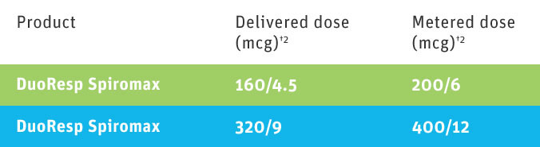

If you would like to know more then please request a representative visit.
Correct inhaler use
Product comparison
Further information for Healthcare Professionals
DuoResp Spiromax guides for non-English speaking patients – this booklet contains essential information to help your patients who are prescribed DuoResp Spiromax:
For further information see the SmPC, or visit the Teva UK website.
*DuoResp Spiromax is licensed for use in adults 18 years of age and older only.
**For 160mcg/4.5mcg strength only.
†The label on DuoResp Spiromax indicates delivered dose.
1. Weisfeld et al. Int J Clin Pharmacol Ther, 2015; 53(7) 593-602.
2. DuoResp Spiromax Summary of Product Characteristics.
Any suspected adverse reactions should be reported to Teva via email to safety.ireland@teva.ie or by telephone to +353 51 321538. You can also report side effects directly via the national reporting system: HPRA Pharmacovigilance, Earlsfort Terrace, Dublin, Ireland. Tel +353 1 6764971; Fax +353 1 6762517; Email: medsafety@hpra.ie; Website: www.hpra.ie